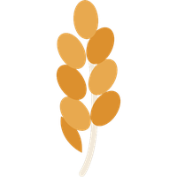
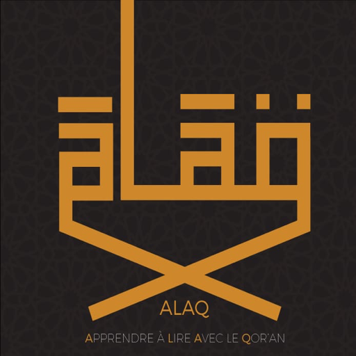

0 7

0Tout repart à zéro (étoiles, disques terminés). Cette action est irréversible.

Méthode francophone pour apprendre à lire l'arabe, comprendre et mémoriser le Qor'an.
Bismillah, on commence !
Tes 3 premières lettres : م · ل · ن
مَّثَلُ الَّذِينَ يُنْفِقُونَ أَمْوَالَهُمْ فِي سَبِيلِ اللَّهِ كَمَثَلِ حَبَّةٍ أَنْبَتَتْ سَبْعَ سَنَابِلَ فِي كُلِّ سُنْبُلَةٍ مِائَةُ حَبَّةٍ ۗ وَاللَّهُ يُضَاعِفُ لِمَنْ يَشَاءُ ۗ وَاللَّهُ وَاسِعٌ عَلِيمٌ
« Ceux qui dépensent leurs biens dans le chemin d’Allah sont à l’image d’un grain qui fait pousser sept épis, à cent grains chacun. Et Allah multiplie la récompense à qui Il veut. Allah est Immense et Savant. »
sourate Al-Baqara, verset 261
« Les actes les plus aimés d'Allah sont les plus constants, même s'ils sont peu » — Bukhari & Muslim